官方数据全面分析｜训练与验证真值实算报告
基于九份官方训练文件和六份已解锁验证真值，解释面板覆盖、组成、类型内部状态、空间观察过程与模型误差。所有真值分析均属于开发诊断。
先读这里：这份数据告诉了我们什么？
1. 现在已拿到官方验证答案。训练和验证共 15 个文件，既有核 RNA，也有只测指定 500 基因的空间实验。
2. 图里最重要的区别是细胞组合和同类细胞内部状态：E9.5 到 E10.5 两者都变了，且取材范围和标签也变了。
3. Gata4 两个胚胎给出同向线索，但没有跨批次 WT，不能把差异认定为纯基因效应。
4. 代表预测已和真值逐一比较；这些结果用于找误差，不能当作新的官方成绩或独立泛化证明。
建议阅读顺序：先看能测到什么 → 再看细胞组成 → 理解整体与类型内变化 → 查看异常线索。其余章节用于补充和核查。
几个词先解释：E8.75 是胚胎发育时期；MERFISH 是测量细胞位置和指定基因的实验；“面板”是这 500 个指定基因；“模块”是一组功能相关基因；“检出率”是有多少细胞测到了某基因；“相对表达”类似固定总额中的份额，不是原始分子数量。
关键发现的定量依据
- 身份 A 9 份训练与 6 份验证真值均已审计；验证真值 316,871 个细胞，原始文件只存于 5090server。
- 面板 B 500 基因面板偏向心脏/血管功能；S 期 0/9、收缩 4/12，可观察范围有明确盲区。
- 组成 C E9.5→E10.5 粗心肌比例 30.3%→14.9%；E10.5 取材范围和标签体系均改变，不能读作心肌数量下降。
- 类型内 C 四个可测收缩基因总体相对均值下降 413.2，组成项 -253.2、粗类型内项 -160.0；不是因果归因。
- 扰动 C 两份 Gata4 KO 的心肌比例与心肌内收缩模块均低于共享 WT；批次与取材仍混杂。
- 误差 C 六个预测-真值配对均覆盖官方评分基因轴；原始指标仍只作开发诊断，不冒称官方新成绩。
目前仍不知道
- KO 与 WT 的交叉运行批次和更多独立 WT 胚胎；现有差异不能唯一归为扰动。
- MERFISH 原始分子点位、探针轮次、视野及分割质量；不能确认具体技术故障或绝对 RNA。
- 各胚胎可比较的组织区域与经认证物理坐标；不能从发布点云推断生长尺度。
- 作者逐基因入选记录；功能注释和 GO 富集不能替代设计动机。
- 独立 P3/新胚胎结果；解锁验证答案后，这批数据只可作开发评估。
已核验文件
验证集补全 · 2026-11-19
| 验证文件 | 观测数 | 测量基因 | 每观测检出中位数 | 源全轴零值比例 | Unknown | SHA256 |
|---|---|---|---|---|---|---|
| T1 E10.5 | 24,979 | 32,285 | 2869 | 90.87% | 0 | 974e04e7fe64fb96… |
| 胚胎 E7.5 | 11,665 | 500 | 29 | 93.13% | 457 | e8e47255ddeca96d… |
| 心脏 E8.5 | 23,710 | 500 | 61 | 87.70% | 263 | 41c76db18bfaa92c… |
| 心脏 E10.5 | 167,864 | 500 | 30 | 93.53% | 3299 | d6b37967f9cf3533… |
| Gata4 KO 重复1 | 42,257 | 500 | 38 | 92.21% | 0 | 3805715d25c85873… |
| Gata4 KO 重复2 | 46,396 | 500 | 34 | 92.82% | 0 | 1760657da7c477c4… |
这是各自完整测量轴上的统计；32,285基因与500基因的零值比例不可直接解释为生物学复杂度。每个发布文件没有可拆分的生物个体字段；两个Gata4重复分别展示。
本次重算六文件SHA256，并回读每文件101个固定行的全部基因核对缓存。完整身份、层、标签与坐标核对
每行是一个发布文件。T1 为多胚胎混样池，不能把池中细胞当独立胚胎；T2/T3 的切片也不是重复。E8.75 与 E9.5 WT 兼作 T3 参考时只计一次来源。
| 文件 | 数据组 | 细胞 | 基因 | 空间层 | 表达尺度 | 身份 |
|---|---|---|---|---|---|---|
| E6.75 | T2 整胚训练 | 7,093 | 498 | 37 | log1p(CP10k) | 官方 SHA-256 匹配 |
| E7.25 | T2 整胚训练 | 13,295 | 498 | 40 | log1p(CP10k) | 官方 SHA-256 匹配 |
| E8.0 | T2 整胚训练 | 31,671 | 500 | 30 | log1p(CP10k) | 官方 SHA-256 匹配 |
| E8.25_late | T2 心脏训练/共享 WT | 58,716 | 500 | 38 | log1p(CP10k) | 官方 SHA-256 匹配 |
| E8.5_RNA | T1 核 RNA 训练 | 16,787 | 32,285 | — | log1p(CP10k) | 官方 SHA-256 匹配 |
| E8.75 | T2 心脏训练/共享 WT | 24,826 | 500 | 35 | log1p(CP10k) | 官方 SHA-256 匹配 |
| E9.5 | T2 心脏训练/共享 WT | 53,742 | 500 | 40 | log1p(CP10k) | 官方 SHA-256 匹配 |
| E9.5_RNA | T1 核 RNA 训练 | 17,057 | 32,285 | — | log1p(CP10k) | 官方 SHA-256 匹配 |
| E9.5_mab21l2_ko | T3 Mab21l2 KO 训练 | 50,294 | 500 | 36 | log1p(CP10k) | 官方 SHA-256 匹配 |
| E10.5_RNA | T1 核 RNA 验证真值 | 24,979 | 32,285 | — | log1p(CP10k) | 本轮下载哈希已记录 |
| E10.5 | T2 心脏验证真值 | 167,864 | 500 | 44 | log1p(CP10k) | 本轮下载哈希已记录 |
| E7.5 | T2 整胚验证真值 | 11,665 | 500 | 34 | log1p(CP10k) | 本轮下载哈希已记录 |
| E8.5 | T2 心脏验证真值 | 23,710 | 500 | 25 | log1p(CP10k) | 本轮下载哈希已记录 |
| E8.75_gata4_ko_1 | T3 Gata4 KO 验证真值 | 42,257 | 500 | 46 | log1p(CP10k) | 本轮下载哈希已记录 |
| E8.75_gata4_ko_2 | T3 Gata4 KO 验证真值 | 46,396 | 500 | 44 | log1p(CP10k) | 本轮下载哈希已记录 |
完整路径、字节数、有序基因轴、原始标签、字段与 SHA-256 见 file_inventory.csv；训练公开校验值见 OFFICIAL_TRAIN_CHECKSUMS.json，验证下载审计见 VALIDATION_RELEASE_AUDIT.json。
我们真正分析了哪些官方数据？
官方账号解锁 validation-release-v1 后直接下载到 5090server；训练与验证身份分开记录。
怎么看图：每行是一份 H5AD，长度是其中的细胞数；绿色为训练、红色为新解锁的验证真值。文件和细胞都不自动等于独立胚胎重复。
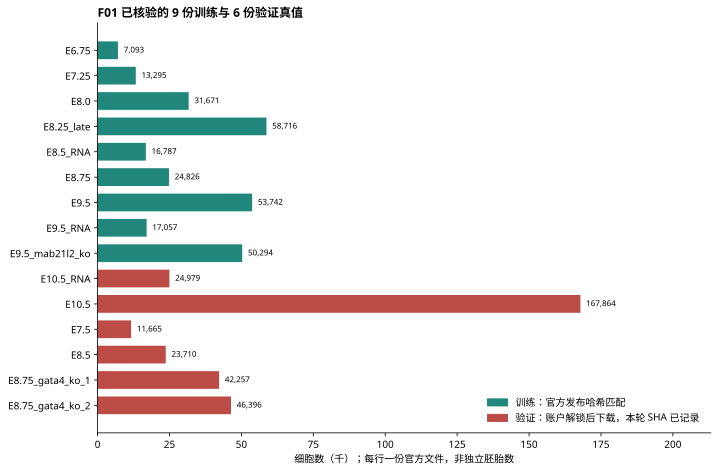


各时期、模态和条件的可审查覆盖有多大？
9 份训练文件 273,481 细胞，6 份验证真值 316,871 细胞，合计 590,352。六份验证文件均核验了大小、SHA-256、细胞/基因轴和字段；T3 的 KO1/KO2 分别是 M164-KO1、M164-KO2。
这覆盖公开训练与验证答案；共享 WT 只计一次，下载文件不是历史预测提交。
训练文件有官方发布 SHA 可比对；验证文件的 SHA 是本轮下载后记录的身份指纹，不是网页发布的校验值。
所有后续数值从这些真值和训练文件重新计算；P3 隐藏测试答案仍未发布。
独立单位与尺度：15 个发布文件；T1 为不可拆分的混样池，T2/T3 每文件按发布标本描述；X=log1p(CP10k)。 证据：file_inventory.csv · VALIDATION_RELEASE_AUDIT.json · VALIDATION_AUDIT_RAW.json
哪些比较真正可行？
对 15 份官方文件逐列核验，而非根据文件名推测字段。
怎么看图：每行是文件，绿色“有”表示真有此字段。先看三维坐标，再看运行批次、视野、分割质量；灰格表示未发布，不能填成正常值。
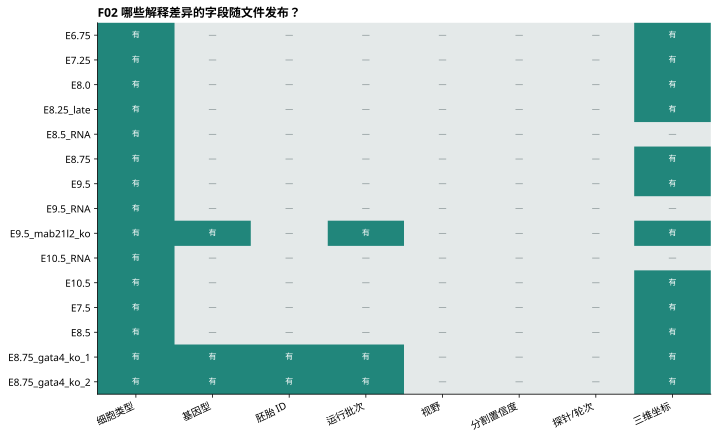


标签、胚胎编号、批次、切片与分割质量是否构成交叉设计？
全部文件有 celltype；12 份空间文件有 spatial_3D。Gata4 两份有 embryo、condition 和 perturb_batch，但 WT 对照没有匹配的运行批次列；大多数文件缺视野、分割置信度和探针轮次。
可以做文件内类型、检出、空间和切片描述；技术因素与时期/基因型没有充分交叉设计。
缺列不代表质量良好；KO1/KO2 的扰动批次标记不能给 WT 补出可比批次。
异常先定位，再索取运行、探针、视野和分割元数据；不要用模型校正声称恢复了真实效应。
独立单位与尺度：字段存在性审计；15 文件，12 空间文件；无胚胎级显著性。 证据：field_availability.csv · analysis_feasibility.csv
官方为什么选择这些基因？
区分作者明说的面板层面目标、公开方法、文献用途和未知逐基因动机。
怎么看图：灰条的 500/500 表示作者未公布逐基因的设计决策，不表示这些基因功能未知。
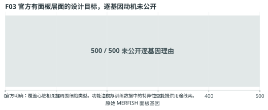


500 基因的逐基因选择理由有多大比例可以追溯？
官方实验协议明确面板面向心脏相关及周围细胞类型；仍无逐基因候选池、入选理由和探针质量表。
GO 和细胞特异性可以解释面板能观察什么，不能替作者补写选择决策。
未知动机不等于随机选择；也不能把其他 MERFISH 论文的筛选流程移植到本项目。
面板注释用于解释观测能力，建模应记录来源级别与缺失列。
独立单位与尺度：官方设计面板 500 基因；来源 S1/S2；非统计估计。 证据：SOURCES.json · PANEL_PRIORS.md · panel_gene_identity.csv
面板偏向与盲区是什么？
500 基因设计轴在新增的空间验证文件中完整发布；功能富集使用冻结的训练 RNA 可表达背景。
怎么看图：4/12 是预先定义的 12 个收缩基因只观测到 4 个；GO 图比较实际命中和表达/检出匹配的随机面板。S 期 0/9 是没有测，不能读作没有细胞增殖。
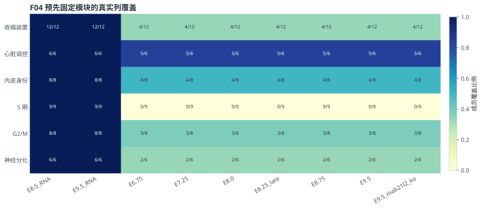


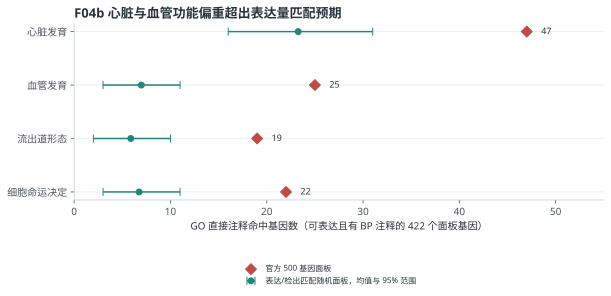


偏向是否超出表达和检出分布可解释的水平？
心脏发育 47/422 个面板基因命中，对照期望 23.27（95% 16–31），OR 6.21、全家族 BH q=2.1e-16；血管发育 25 个，OR 14.83。同时 MERFISH 的 S 期模块 0/9、收缩模块 4/12。
设计确实偏向心脏与血管相关功能；匹配对照和去 IEA 敏感性保留方向。
GO 条目重叠且直接注释不完整；功能富集不证明作者逐基因动机。零覆盖不能推断 S 期不存在。
模型应以实际可观测模块建特征，对 S 期和未测收缩标记显示盲区。
独立单位与尺度：可表达背景 16,745，GO BP 已注释背景 12,611；面板 422；2,730 个 GO BP 检验 BH-FDR；1,000 个匹配面板敏感性。 证据：module_coverage.csv · panel_GO_BP_enrichment.csv · panel_GO_matched_sensitivity.csv · PANEL_GO_METHOD.json
基因在何时何地被观察？
图中灰色编码文件缺列，紫色低值是列已测但多数细胞为零；不同任务评分另用其有序面板。
怎么看图：灰色是文件没有该基因列，有色格才表示真实检出率。图为训练示例；完整 15 文件的掩码请打开表格。
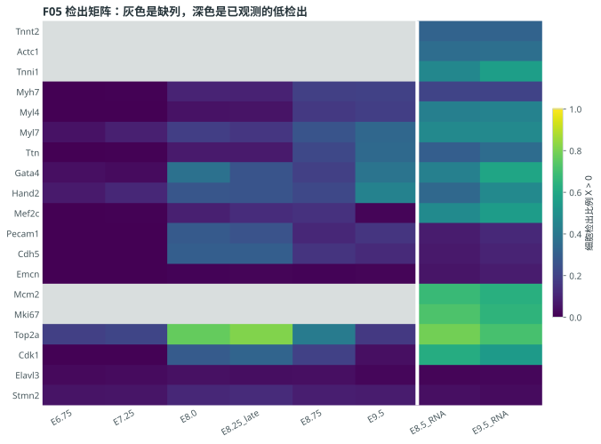


未测量、文件缺列和观察到零能否分清？
新增 E7.5 整胚、E8.5/E10.5 心脏和两份 Gata4 KO 均有 500 列；E6.75/E7.25 训练为 498 列。官方 E7.5 评分轴确认为 498 基因；Casp4 与 Pnliprp1 在验证真值中有列，但不纳入该 board 评分。六个预测-真值配对的正式评分轴均完整。
面板给出的零模式是观测结果，缺列处不构成生物学零。
早期 Casp4/Pnliprp1 缺列原因在两个官方页面措辞冲突，不能从文件层面判定是未设计还是低表达被删。
跨模态与跨时期模型需显式传递观测掩码和评分轴，禁止补零制造趋势。
独立单位与尺度：15 文件；官方评分面板按有序基因轴哈希核验，检出定义 X>0。 证据：gene_observation_mask.csv · score_gene_mask.csv · SCORE_PANEL_AUDIT.json
各样本表达分布有何差异？
全部 12 份空间文件用发布 500/498 基因轴比较检出；T1 核 RNA 另列，不与 500 基因柱高混比。
怎么看图：每根柱是一个空间文件的每细胞检出基因数中位数。红柱为验证；柱高不能直接解释成设备效率。训练对照的箭头图仅示范检出/阳性分解。
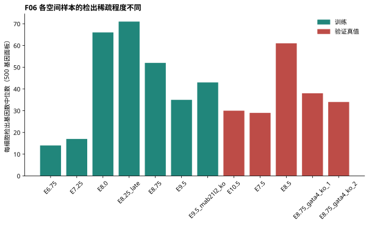


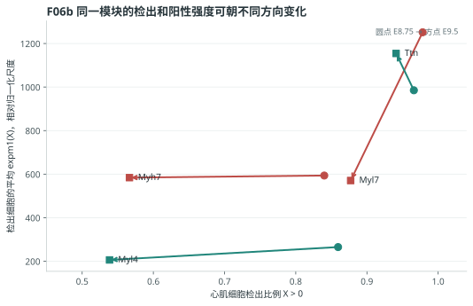


检出率变化与阳性强度变化各有多大？
E8.5 验证心脏中位检出 61 基因，E10.5 验证心脏 30；E7.5 整胚 29。Gata4 KO1/KO2 为 38/34，同阶段共享 WT 为 52。E9.5→E10.5 心肌 Myh7 检出率 0.57→0.34，Ttn 0.94→0.84；Ttn 的相对均值下降大部分来自阳性强度项。
检出与阳性表达的结构随文件变，且各基因机制不同。
expm1(X) 不是原始分子数；不同取材、细胞亚型和归一化也能改变这些量。
预测应同时校准零比例与阳性尾部，逐基因解释，不能只调一个全局强度。
独立单位与尺度：12 空间文件；每时期一发布样本，细胞中位数不是胚胎级置信区间。 证据：file_inventory.csv · validation_key_hurdle.csv
是否存在面板归一化效应？
检查高占比模块与其余基因的相对份额，保留原 500 基因轴的发布归一化。
怎么看图：两边份额加起来恒为 100%。原图是训练 E8.75→E9.5；新增验证 E10.5 的份额见表。
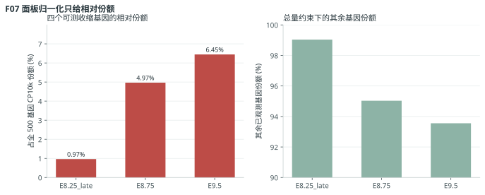


四个可测收缩基因占比变大时，其他基因能否被解释为绝对下降？
四个可测收缩基因的全样本份额 E9.5 为 6.45%，E10.5 为 2.31%；其他已测基因份额反向变化。
这表明面板内部的相对分配改变，与固定总额闭合效应相容。
互补份额的变化是算术结果，不能由此推断绝对分子数或 MERFISH 检测效率。
在发布尺度训练模型，保留观测掩码；需要原始分子点位才能研究绝对量。
独立单位与尺度：E9.5/E10.5 各一发布标本；同一 500 基因轴，四个收缩成员。 证据：module_share_by_file.csv · FROZEN_ANALYSIS.json
细胞组成与取材如何变化？
训练心脏、验证心脏与 Gata4 KO 并列；标签仅按名称做保守粗映射。
怎么看图：每条加起来 100%。同色是保守粗标签，灰色“未统一”表示名称不能可靠匹配，不代表这种谱系消失。
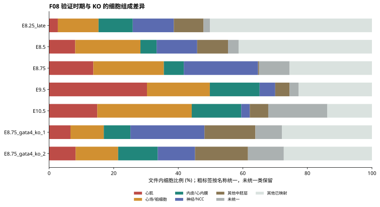


不同时间窗口的组成差别是否可直接读为发育？
粗心肌比例 E9.5 为 30.3%（16,291/53,742），E10.5 为 14.9%（25,036/167,864）。E10.5 的未统一标签为 18.3%，E9.5 为 2.8%。
E10.5 分离心脏与早期含心管切片的取材范围不同；标签体系也改变。绝对心肌细胞数增加而文件内比例降低，说明分母和支持区域同样重要。
比例差不是心肌生长率；未统一标签、真实组织范围和批次无法凭此拆成因果份额。
建模时分别描述目标取材支持、粗谱系组成和类型内状态，并做标签映射敏感性。
独立单位与尺度：E9.5/E10.5 各一发布样本；无胚胎级误差条。 证据：validation_key_composition.csv · raw_type_composition.csv · label_mapping_review.csv
整体变化来自组成还是类型内部？
预先冻结的共同四基因和对称代数分解；只在共同粗标签上估计。
怎么看图：每个基因三条横棒：组成项、类型内项、实际净变化；左右表示 E10.5 比 E9.5 增减。最后一行是四基因合计。
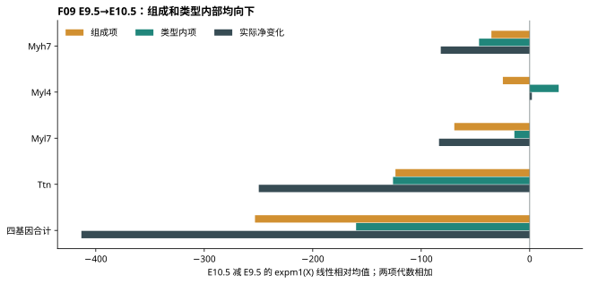


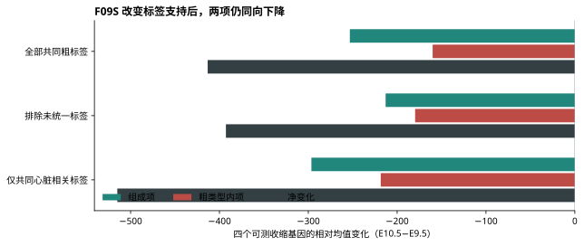


四个可测收缩基因的总体变化如何分开描述？
四基因合计净变化 -413.2，组成项 -253.2，粗类型内部项 -160.0。排除未统一标签后，净变化 -392.7，C=-213.0、S=-179.8；仅共同心脏相关标签时净变化 -515.0。Ttn 下降、Myl4 上升，成员并非一致。
整体趋势不能归为单一的细胞比例变化；类型内部也改变了相对表达。
排除未统一标签只保留 E9.5/E10.5 的 97.2%/81.7% 细胞；心脏核心只保留 76.7%/68.9%。代数分量不是取材或机制的因果百分比，类型内项仍含亚型组成；无认证的共同解剖区域可作严格匹配。
预测应分别检查组成、类型内模块和成员方向；E10.5 的标签未统一比例较高。
独立单位与尺度：一份 E9.5 和一份 E10.5；expm1(X) 线性相对均值；无独立重复推断。 证据：composition_state_decomposition.csv · label_support_decomposition_sensitivity.csv · VALIDATION_FINDINGS.json
空间结构和切片是否连续？
保留发布坐标；展示用每文件固定种子分层抽取约 3,500 细胞，完整细胞用于逐层统计。
怎么看图：XY/XZ 是同一空间点云从两个方向的投影；新图对比 E9.5 训练和 E10.5 验证。每个点只是绘图抽样，逐层统计用全体细胞。
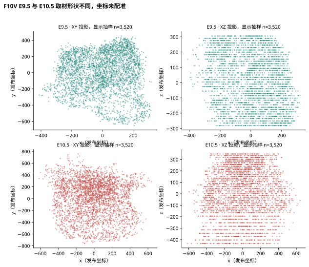


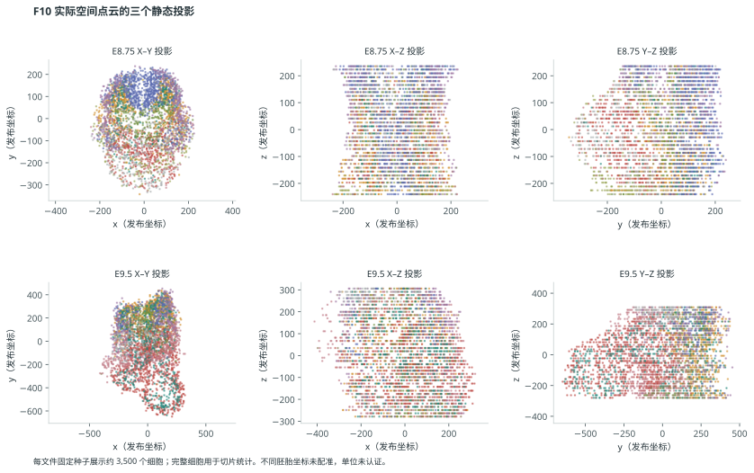


点云和 z 层有什么结构？
E9.5 有 40 个发布 z 层，E10.5 有 44 层；验证 E8.5 有 25 层、E7.5 有 34 层，Gata4 两份为 46/44 层。所有验证空间文件坐标有限且可逐层读取。
切片重建提供明确空间顺序，层数和取材轮廓是可观测属性。
发布坐标单位、轴向和胚胎间配准未经认证，形状差不能直接换算为微米或生长速度。
空间生成需保留局部坐标语义，所有几何校正先作为显式敏感性视图。
独立单位与尺度：12 空间文件、449 发布 z 层；切片嵌套于样本，非独立胚胎。 证据：spatial_preview_points.csv · slice_summary.csv · VALIDATION_SPATIAL_AUDIT_RAW.json
哪些异常可能与技术有关？
逐层检测均值减去同一原始 celltype 在整文件的均值，观察类型组成不能解释的层间残差。
怎么看图：红线表示扣除同一原始类型在文件内平均检出后的逐层残差；偏离零是线索，不是技术故障诊断。
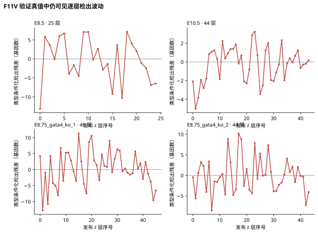


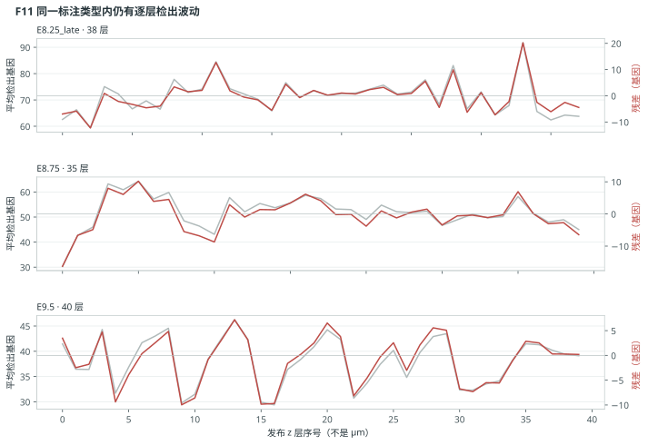


切片波动在固定标签后是否仍出现？
验证 E8.5 第 0 层类型条件化残差约 -13.1 基因（1,014 细胞）；E7.5 第 6 层约 +11.7（335 细胞）。两份 Gata4 KO 的最大绝对残差约 12.8 与 10.2 基因。
波动在控制原始标签后仍存在，与解剖亚区、未分辨亚型和观察过程均相容。
无视野、分割置信度、原始分子点位与探针轮次，不能说是哪一步实验出错。
先定位这些层，再结合原始实验质控和邻近层复核；不要自动对所有层做强度校正。
独立单位与尺度：449 层嵌套于 12 文件；细胞数为层内支持量，不是重复。 证据：validation_slice_anomalies.csv · slice_conditioned_quality.csv
能否区分批次和生物学？
先核对设计交叉和字段，再决定是否估计效应。
怎么看图：这是设计可识别性示意，不是统计估计图；缺少交叉重复意味着无法给出可信的技术方差百分比。
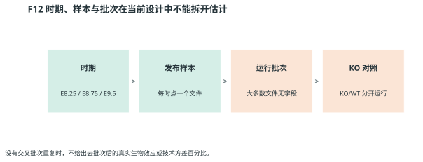


时期和基因型是否与运行批次独立变化？
新增 Gata4 KO1/KO2 确认为两个独立胚胎，但共享 KO 条件及处理背景；WT 只有一份发布文件且没有匹配批次字段。T1 验证核 RNA 是混样池。
阶段、样本、取材和潜在技术运行高度绑定；当前无法给出可识别的技术方差比例。
整合后 UMAP 混合更好不等于批次被正确剥离，且不能替代交叉批次重复。
暂停确定性去批次归因；未来收集相同条件跨运行及相同运行跨条件的独立胚胎。
独立单位与尺度：KO 2 个胚胎、共享 WT 1 个发布样本；批次与条件混杂，不给 p 值。 证据：field_availability.csv · analysis_feasibility.csv · SOURCES.json
哪些发育先验成立？
模块成员在查看 P2 数值前固定；在共同 500 基因轴和保守粗类型中画训练时间曲线。
怎么看图：绿色点来自训练、红点来自验证；每点是一份文件的粗类型内平均相对表达，连线只表示时间顺序。
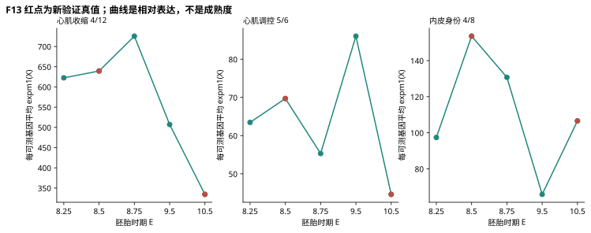


心肌收缩、调控与内皮身份是否共享单调成熟方向？
心肌四基因收缩模块 E8.25→E8.5→E8.75→E9.5→E10.5 约为 622.5→639.4→725.5→507.1→334.3；E10.5 比 E9.5 低。
这一有限面板的相对程序受类型、时期和取材影响，简单持续增强的先验不受支持。
不能据此否认心肌生物学成熟；只有 4/12 个收缩成员，类型标签也可能参与先前聚类。
使用时窗和谱系限定的弱先验，并在独立胚胎中验证方向。
独立单位与尺度：五个 WT 心脏发布文件，各时期一份；4/12 收缩基因，相对 CP10k。 证据：validation_key_modules.csv · FROZEN_ANALYSIS.json
核 RNA 与 MERFISH 是否相互支持？
验证集补全 · 2026-11-19
原表已经包含E10.5核RNA与空间数据的类型特异性，及E9.5→E10.5跨模态变化。外部来源的验证补充见16组背景比较；测量模态不同，不能把同日龄当作同胚胎配对。
冻结的 E9.5 同阶段类型特异性比较，加上解锁真值后新增的 E10.5 探索性复核。
怎么看图：上图每点是 E9.5 的一个共同基因；中图比较两个时期的同阶段特异性；下图才检验 E9.5→E10.5 的变化方向是否跨模态一致。
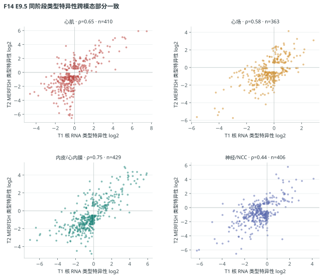


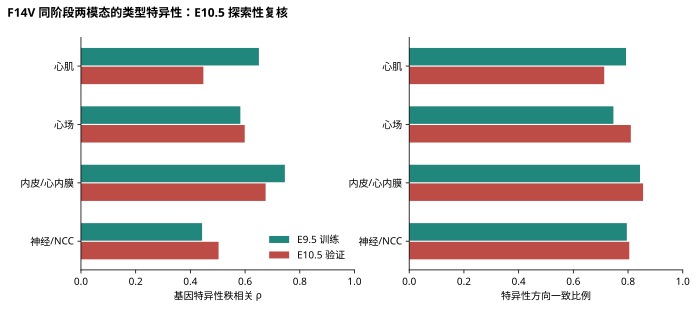


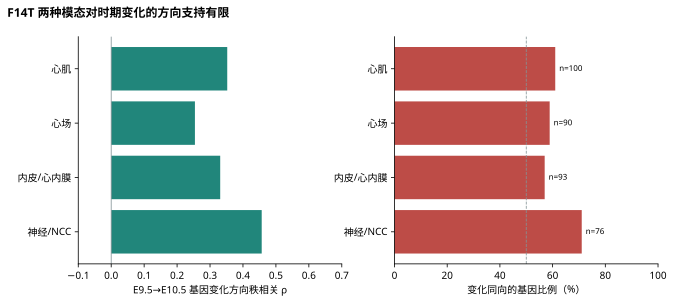


同一种粗谱系的基因特异性是否在两种测量中同向？
E10.5 心肌 418 个共同有信息基因的同阶段特异性秩相关 ρ=0.45，方向一致 71.3%；E9.5 心肌 ρ=0.65。跨时期方向检查中，心肌 100 个共同有信息基因的变化秩相关 ρ=0.35，同向 61.0%；神经/NCC 为 71.1%。
部分类型标记可跨模态迁移，但同阶段像不等于时期变化一致；心肌的跨时期方向支持较弱。
两模态来自不同胚胎/混样池，核与全细胞、取材范围也不同；方向相关不能证明同一胚胎内的发育机制。
优先迁移稳健的类型排序，保留模态特定尺度和 E10.5 心肌不确定性。
独立单位与尺度：E9.5 T1 一个混样池 + T2 一个空间标本；共同面板基因；+0.1 伪计数，仅描述。 证据：cross_modal_specificity.csv · cross_modal_specificity_gene.csv · cross_modal_temporal_summary.csv · cross_modal_temporal_gene.csv · DEVIATIONS.json
KO 是发育偏移还是特异扰动？
验证集补全 · 2026-11-19
两个Gata4 KO验证重复已分别进入本节原表。外部缺少同阶段、相同Cre/等位背景与合适对照的匹配组，保留“不能据此判定机制”的结论；不同KO或WT不补作答案。
预先冻结的 C06：各 KO 分别对共享 E8.75 WT；不把两个 KO 细胞合并成假重复。
怎么看图：第一图比较文件内心肌比例与心肌收缩表达；第二图把各 KO 的模块变化投向仅用 WT E8.5→E9.5 定义的方向，并显示方向外残差。
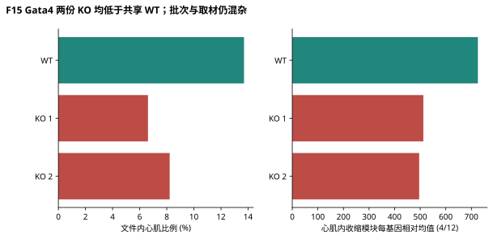


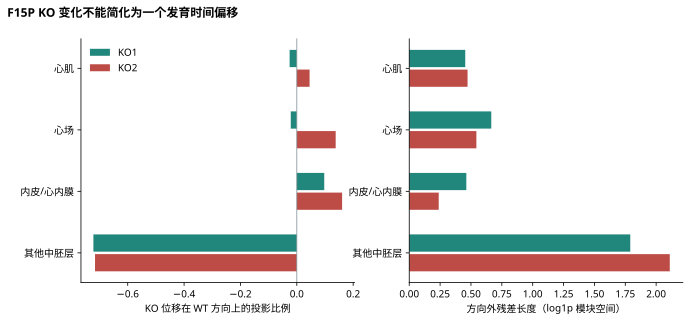


现有文件能否支持 Gata4 的偏移/残差判断？
WT、KO1、KO2 心肌比例 13.7%/6.6%/8.2%；心肌内收缩相对均值 725.5/512.3/496.0。心肌四模块的 WT 方向投影 KO1/KO2 为 -0.03/+0.05；方向外残差分别为 0.45/0.47。
两个 KO 对同一 WT 的方向一致，值得作为下一轮独立重复验证的候选现象。
投影比例不是发育小时数，四模块残差也不证明特异机制。KO 与 WT 的运行批次、标签和空间范围未交叉；共享 WT 一份，不可给胚胎级 p 值。条件也含 Gata6 F/+ 与 Mesp1-Cre。
按胚胎分别报告，并优先获取 WT/KO 跨批次重复及共同区域；不把两份 KO 直接当部署校正量。
独立单位与尺度：KO 两个独立同窝胚胎，共享 WT 一发布标本；500 基因相对表达。 证据：validation_gata4_modules.csv · validation_key_composition.csv · gata4_wt_direction_projection.csv · gata4_wt_direction_components.csv · VALIDATION_RELEASE_AUDIT.json
现有模型到底错在哪里？
五个已重哈希的代表预测，其中 Gata4 同一预测分别对 KO1/KO2；使用固定 700 细胞、3 个种子的原始公开指标作技术敏感性。
怎么看图：左图是每个共同基因的平均 log1p 表达差绝对值再取平均；右图是检出比例差。每条是一份预测对一份真值，不是官方总分。
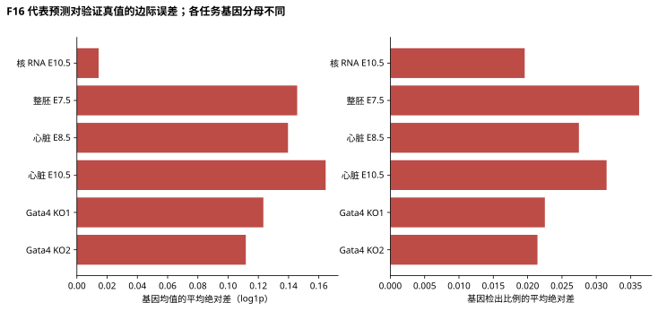


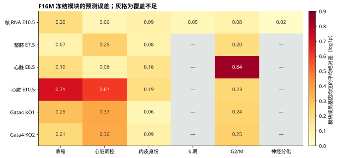


预测误差能否按类型、模块、空间区域和指标定位？
E10.5 心脏预测对 500 基因的平均绝对基因均值差为 0.165 log1p、平均检出比例差 0.032；其中收缩模块 4 个可测成员的均值差达 0.712。E7.5 预测完整覆盖官方 498 基因评分轴，真值另有 2 个不评分基因。T1 真值辅助类型重加权在共同标签覆盖 53.2% 的细胞上使基因均值差 0.0211→0.0162，但不可部署。
误差分布可定位到边际表达、零值模式与空间指标，提供比历史总分更具体的改进目标。
这些是解锁验证真值后的开发诊断，不是官方新成绩或独立泛化；细胞抽样种子不是胚胎重复。多数预测缺类型标签，类型内误差与组成重加权不可估计；T1 重加权依赖真值比例。
优先检查大误差基因、模块和空间指标，再用独立胚胎评估改动；真值辅助重加权只作诊断。
独立单位与尺度：6 个预测-真值配对、5 个预测版本；T1 32,285 基因，空间任务 498/500 基因。 证据：model_validation_diagnostics.csv · model_gene_error_top.csv · model_module_errors.csv · SCORE_PANEL_AUDIT.json · MODEL_VALIDATION_FINDINGS.json · model_diagnostics_remote.py
下一步应怎样改？
把数据证据、可能误差、动作、风险和独立验证方式放在同一表。
怎么看图：逐行看：建议依据是什么、容易误判什么、要用何种独立样本验证。这里没有把分析发现写成已取得的分数收益。
| 优先事项 | 现在的依据 | 误判风险 | 下一步检验 |
|---|---|---|---|
| 1. 固定评分与观察双轴 | E7.5 评分 498 基因已完整；真值另有 2 个不评分基因。 | 把评分排除误判为模型缺列。 | 模型输入与官方有序评分轴分别验收。 |
| 2. 分离组成与状态 | E9.5→E10.5 四基因 C=-253.2、S=-160.0。 | 将代数项说成取材因果比例。 | 共同标签与共同区域敏感性；新胚胎复核。 |
| 3. 校准检出与阳性值 | E10.5 心肌 Myh7 和 Ttn 的变化形式不同。 | 把相对量当绝对分子数。 | 逐基因零比例、阳性尾部及联合结构。 |
| 4. 核验空间层 | 验证 E8.5/KO 有类型条件化层间残差。 | 把真实解剖边界当故障。 | 原始点位、视野和分割质量核对。 |
| 5. Gata4 独立复核 | 两 KO 对共享 WT 同向。 | 批次与基因型混杂。 | 同批 WT/KO 与跨批条件交叉的独立胚胎。 |
| 6. 模型误差实验 | 六组真值配对有基因和空间指标。 | 验证集上选模型后仍称独立泛化。 | 固定全指标，留出新胚胎或 P3。 |
基于已下载验证真值，下一轮模型和实验应优先解决哪些可核查误差？
真值已下载并完成六组配对。E7.5 的 498 基因轴符合官方评分合同；下一步应逐基因检查大误差、对 E10.5 做共同组织和标签映射敏感性，并为 Gata4 取得跨批次 WT 重复。
这些是按现有证据排序的实验设计建议，不是已经取得的分数增益。
P2 被用于发现后是开发数据；细胞随机拆分不是独立泛化验证。
所有用这批验证真值选择的模型都需在新胚胎或隐藏 P3 上测试，且保持完整适用指标。
独立单位与尺度：证据等级与适用任务见 H01–H10；此表本身不估计预测收益。 证据：HYPOTHESIS_RESULTS.json · CLAIM_CARDS.json · FROZEN_ANALYSIS.json
来源、计算与复现
图中的细胞数是支持量，不是生物学重复数。所有时间比较保留发布表示；方向性效应以零为基准，未进行跨胚胎物理坐标配准。主表、负结果与不可估计项见 完整假说台账、可行性矩阵和 结论证据卡。
从 REPRODUCE.md 的汇总入口可重建表、图与本报告；输入输出 SHA-256 见 MANIFEST.json。原始官方 H5AD 未打包到交付目录。
- S1 · Virtual Embryo Challenge Data Protocol。官方实验协议；限制见 SOURCES.json。
- S2 · Virtual Embryo Challenge Data。官方数据及面板说明；限制见 SOURCES.json。
- S3 · Virtual Embryo Challenge panel index。官方机器可读评分合同；限制见 SOURCES.json。
- S4 · Virtual Embryo Challenge Evaluation。官方评估说明；限制见 SOURCES.json。
- S5 · Klaus et al., PNAS 2012, Wnt/beta-catenin and Bmp signals control distinct sets of transcription factors in cardiac progenitor cells。原始扰动研究；限制见 SOURCES.json。
- S6 · Gene Ontology mouse annotations and ontology downloads。官方功能注释资源；限制见 SOURCES.json。
- S7 · 本地既有模块定义 marker_modules.json，原始路径 results_20261112/marker_modules.json，SHA-256 c1bf5f000b02ac1c54a941d7f17742c30d6ff14da4b1b7b7382db6dba7a8788f。本轮前固定的探索性模块定义，非官方面板设计资料；限制见 SOURCES.json。
- S8 · Virtual Embryo Challenge Timeline。官方赛段与验证答案发布规则；限制见 SOURCES.json。
- S9 · Virtual Embryo Challenge validation answers for P3。官方账户解锁下载页面；限制见 SOURCES.json。